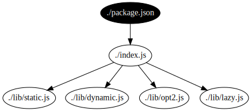

| Static | Dynamic | |
|---|---|---|
| “only …”: separate privileges |
Check security via tight toolchain integration.
Use language features like private, friend,
sound types.
|
Access decisions at runtime based on module identity. Treat import as an access to check. |
| “carefully reviewed”: efficiently use human judgement |
Humans grant privileges by adding to whitelists under source control. Check grants at build time. | Same but check access at runtime using module whitelists. |
| “finish … before …”: lifecycle |
Enables meta-programming and code-generation in the build system. | Depend more on privilege separation but the main module could advance to lower privilege stages. |

// index.js
let staticLoad = require('./lib/static');
function dynamicLoad(f, x) {
return f('./lib/' + x);
}
dynamicLoad(require, Math.random() < 2 ? 'dynamic' : 'bogus');
exports.lazyLoad = () => require('./lib/lazy');
// Fallback to alternatives
['./lib/opt1', './lib/opt2'].forEach(…);